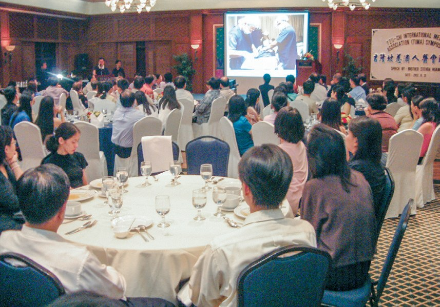
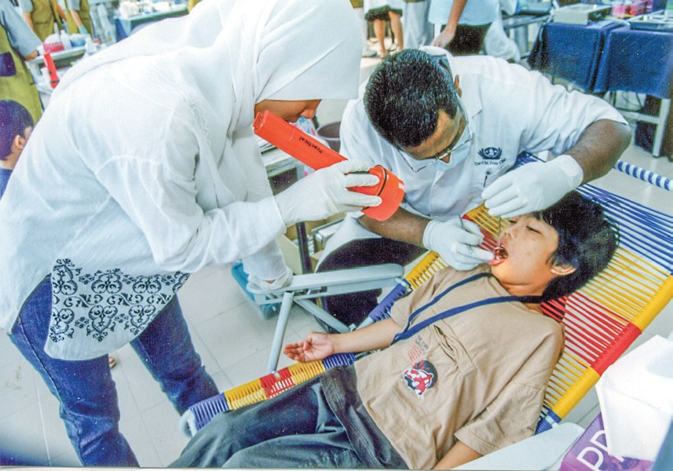
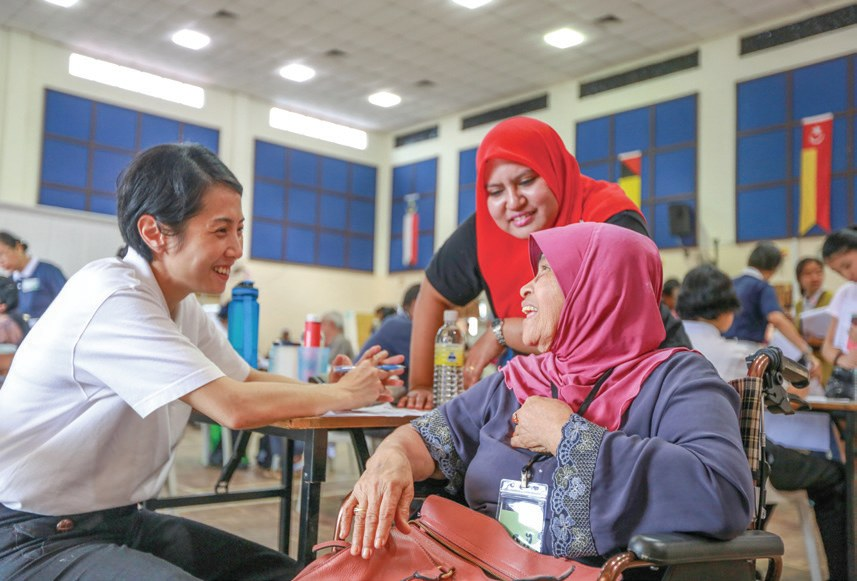
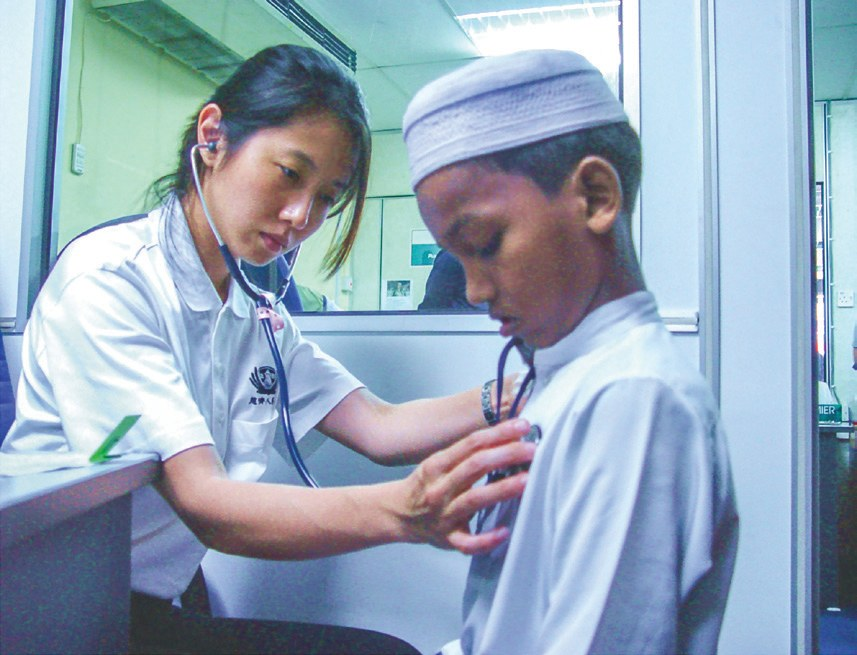
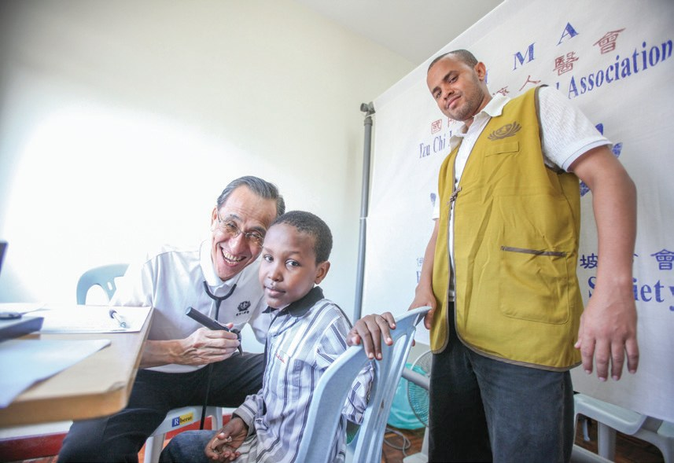
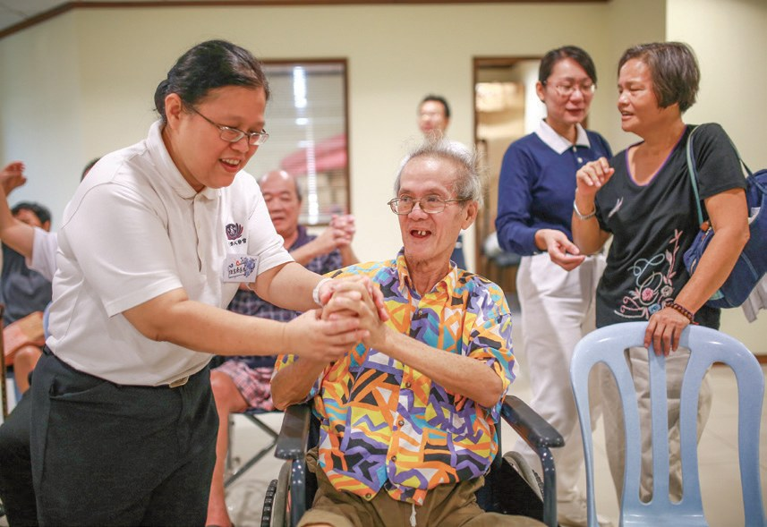
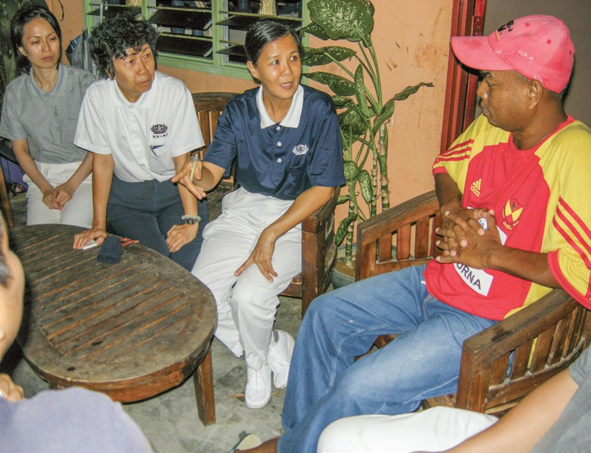
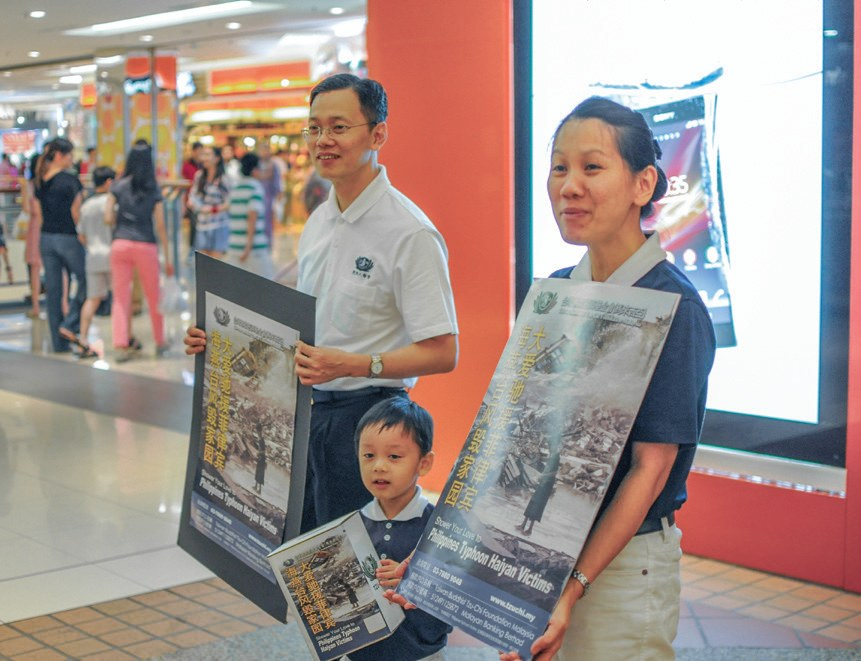

醫病
醫人
醫心
醫師看病，為什麼還要「醫心」？

先別急著下結論，讀完再說說你的想法～
這一篇講雪隆人醫會：從兩位自備藥物的醫師開始，走進原住民村、難民營、海外災區。
最後是三個人的故事：一位脾氣暴躁的醫師、一位四處找醫師的志工，和一位從小立志幫助窮人的醫師。
下面是原書的節錄，紅色底線是我們替你標出的轉折點。
讀之前：你覺得一位好醫師，最重要的是什麼？
兩位醫師起步
雪隆人醫會是怎樣開始的？閱讀引導
年臺灣慈濟人醫會成立，以「醫病、醫人、醫心」為宗旨。
早期僅有中醫、西醫各一位醫師，因為醫療專業的規範，醫師們還自備醫療器材與藥物，免費為貧苦病患看診。

還自己帶藥！

大家身體力行上人所呼籲「人傷我痛，人苦我悲」的慈悲精神。
雪隆人醫會自成立以來，積極投入醫療援助，海外義診，國內原住民、難民、社區義診及成立病友互助會。

到三百九十三人。
- 393人成員人數（截至2021年）p.343
- 2003年巴生義診中心啟用p.342
- 2007年吉隆坡義診中心啟用p.342
原始森林裡的義診
山路崎嶇，醫師怎樣把醫療送進原住民村？閱讀引導
「在尊重生命的理念下，志工應配合政府展開義診活動。」
上人慈示・p.344
當地屬於未開發的原始森林，村民以森林資源維生，大多生活困苦，教育水平低，缺乏醫療資源。

看病好難。
沙巴哥打馬魯都由於山路崎嶇難行，基於安全考量，遂於2004年停辦山區義診
猜一猜閱讀引導
2016年重啟哥打馬魯都山區義診，動員了多少人？
政府醫院也派員提供白內障、肺結核、瘧疾檢測，慈濟與政府多方合作，共同守護偏鄉居民的健康。

又重新上山！
走進去
海外災區、難民營，人醫會也去。閱讀引導

苦難人走不出來，我們就走進去
上人說・p.346「有苦難的地方才可以造就人間菩薩，期待參與義診的志工們，用智慧把握每一個因緣來付出。」
劉濟雨表示・p.346「參與義診，能讓自己跳出名利金錢的薰染，找回當醫師那分單純平實的初發心。」
梁健寬醫師說・p.347找回當醫師的初心。
馬來西亞難民約有三十萬，其中七成來自緬甸

透過翻譯與難民溝通，但翻譯員人數有限，醫護及志工只能透過比手畫腳與病患溝通。

就比手畫腳。

過程中，感動許多緬甸裔民眾加入志工行列，不論是協助發放或翻譯溝通，在慈濟舉辦慈善及義診活動中一同來付出。
「很感恩慈濟的義診，讓很多的難民都得到醫療服務，彌補了我們所無法做到的地方。」
難民營的負責人表示・p.349病人少一點
醫師也勸素、做環保，還辦了一場九百人的論壇。閱讀引導
他希望病患藉由吃素減少身體的負擔，進而到恢復健康，不要常來找他看病。
「病人少一點，這樣我就可以和他們多一點時間談慈濟！」
林連水醫師說・p.350病人少一點！
可以知道，只要一個人改變，就可以影響許多人。
在他們的努力下，報名人數超過九百人，超出原本的目標，其中百分之七十是尚未加入人醫會的醫護人員，更有一百位學員是穆斯林。
可見愛不分宗教信仰，大家「醫志」同行。
來了九百多！
三位人醫
一位暴躁的醫師、一位找醫師的志工、一位兒科醫師。閱讀引導
馬來西亞中央醫院的婦產科伍寶燕醫師，原本的個性暴躁，許多「直言」讓護理人員和病患心生不滿
「那一刻，我才知道自己多麼渺小，一點點事就喊苦、埋怨，覺得自己很了不起。」
伍寶燕說・p.353
這讓她體悟到，如果這世上沒有病患，哪有醫師？應該要感恩病人。
是醫師感恩病人！
「……醫師的聽筒只能聽到病人的心跳，唯有無私的大愛才能醫治世間的傷與苦。」
伍寶燕說・p.354雖然遭到許多醫師拒絕，但也有不少醫師被她的真誠所感動，因而加入人醫會，或投入義診服務。
「當我看見醫師疲倦地從手術房走出來，或是一整天的門診，很不忍心。」
志工黃淑瓊說・p.355
只好在手術室外等候，直到晚上九點。
等到晚上九點。
陳成亨從小的志願就是當一名幫助窮苦人的醫師。

「要守好志工的健康」，他重重聽入心。返馬後，隨即著手策劃如何關懷志工的健康，開始舉辦志工健檢、體重管理計劃等。
自心理學角度而言，二十一天是養成習慣的最短週期
養成吃素的習慣。
醫人、醫心、醫大地，才真正是行醫救世
上人慈示・p.358停一停：誰讓你記住了？閱讀引導
選一位你印象最深的人。沒有標準答案。
有人改了脾氣，有人在手術室外等，有人想讓病人少一點。哪一位讓你最有感覺？

一起回頭看看吧～
回望
依本章原文整理，每一條都標了原書頁碼。閱讀引導
背後原因
為什麼醫師要走出去

小川醫師在醫院看病不就好了嗎？
- 缺乏醫療
村民大多生活困苦，教育水平低，缺乏醫療資源。p.344
- 走進去
苦難人走不出來，我們就走進去。p.346
- 醫心
不只醫人身，還要醫人心。p.358
後續發展
雪隆人醫會一路走來

小禾二十多年，人醫會走過哪些地方？
- 1997
首次舉辦發放義診，只有中西醫各一位。p.341
- 2002.9.3
吉隆坡人醫會正式成立。p.342
- 2003.3
卡拜原住民村首次發放義診。p.344
- 2004
與聯合國難民署首次合作難民義診。p.348
- 2016.10
重啟哥打馬魯都山區義診。p.345
- 2017
舉辦國際慈濟人醫論壇。p.351
- 2020.11.15
「健康挑戰21」從沙登新村起跑。p.357
伍寶燕的轉變
以前和後來
小川一念心轉，她有什麼不同？
- 個性暴躁，常「直言」面帶微笑，輕聲細語p.353–354
- 覺得自己永遠是對的應該要感恩病人p.353–354
- 只看病也關懷患者的家庭、生活背景p.354
- 高級主管的身段到各單位分享環保p.354
以上只整理本章寫到的事；書裡沒寫到的，我們不替它下結論。
回頭看讀前的選擇閱讀引導
醫師們走進原始森林、難民營義診（p.344、p.348）；伍寶燕體悟「應該要感恩病人」（p.354）；聽診器是醫師與病人間愛的橋梁（p.358）。醫術、走進去、懂人心，人醫會三樣都在學。
是什麼讓她一念心轉？
只有你自己看得到喔！
準備好了就一起出發～